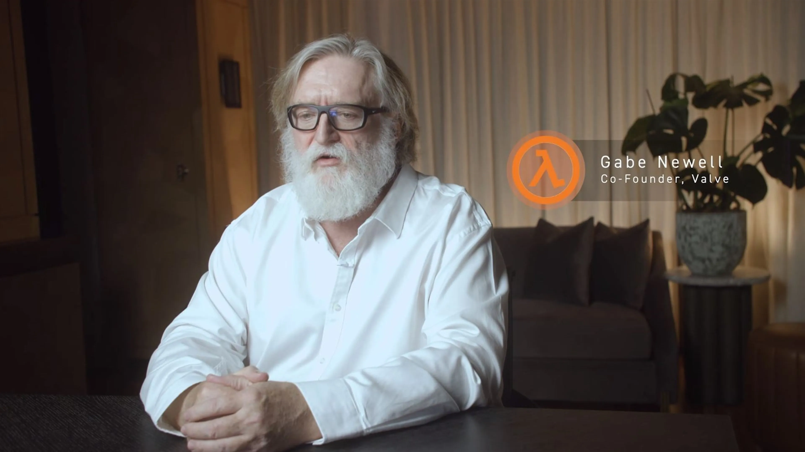

Gabe Logan Newell (Seattle, Washington; 3 de noviembre de 1962) es el cofundador y director general de la empresa desarrolladora de videojuegos y de distribución digital Valve Software.
Newell dejó sus estudios en la Universidad de Harvard para trabajar con Microsoft, donde junto a Mike Harrington desarrolló proyectos como WINDOWS NT y OS/2.